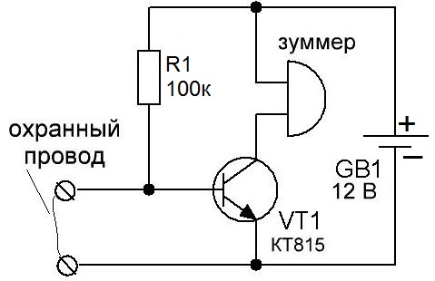
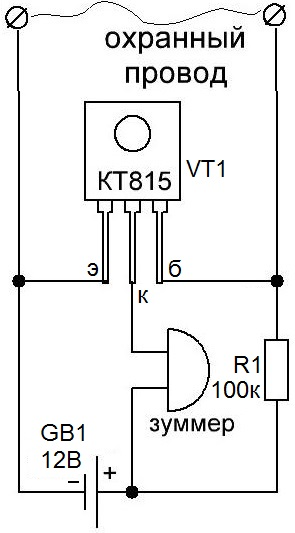
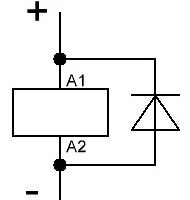

Сторожевое устройство на одном транзисторе


Рис. 1 - Принципиальная и монтажная схемы сторожевого устройства
Тонкий охранный провод можно натянуть через дверной проем. Пока охранный провод цел, то в цепи "плюс батарейки - резистор 100 кОм - охранный провод" будет течь ток. Весь ток будет течь именно через охранный провод, так как его сопротивление очень мало. Так как весь ток течет через провод, этого не хватит, чтобы открыть транзистор. Транзистор открывается только тогда, когда его напряжение между базой и эмиттером будет 0,5-0,7 В.
При обрыве охранного провода, на базе сразу же резко возрастает напряжение, то есть оно стает более, чем 0,5-0,7 В и начинает течь ток через базу-эмиттер. Так как ток течет через базу-эмиттер, транзистор открывается. При этом через цепь "плюс батарейки - зуммер - коллектор - эмиттер" начинает течь ток. Пока через зуммер течет ток, он издает звук.
Зуммер - это звукоизлучатель. При подаче на него постоянного напряжения, он начинает пищать высокочастотным неприятным монотонным звуком. Если разобрать зуммер, то мы увидим на платке нехитрую схему генератора частоты, выполненного в SMD исполнении, а также сам пьезоизлучатель, подпаянный медными проводками к этой платке.
Вместо зуммера можно взять маломощную лампочку или какое-нибудь исполнительное устройство, которое будет включаться через реле (рис. 4). В этом случае не забудьте защитить транзистор, включив параллельно катушке реле защитный диод.

Рис. 4 - Подключение диода к реле
Источники:
ruselectronic.com - Сторожевое устройство на одном транзисторе